10/20
3D 人體要用哪個模型
- 情境
- 要量轉肩、手臂旋轉，2D 不夠；但準確度最好的幾個模型都是 SMPL 系，授權不能商用。
- 選項
- WHAM / GVHMR（SMPL）SAM 3D Body只用 2D
- 決定
- 3D 用 Meta 的 SAM 3D Body，2D 用 Apache-2.0 的 RTMPose 與 MediaPipe；把商用前仍需律師確認的條款列成清單。
- 結果
- 保住商業化的路，同時拿到手臂旋轉、腕部這些 2D 量不到的指標。
我在球機場自主練球，市面的分析工具給了分數，卻說不出差在哪、下一步練什麼。我用 5 天把這個困擾做成一個可以拿去試賣的產品：上傳一段練習影片，自動切出每一拍、打分數、像教練一樣診斷，再把人還原成 3D。
第一版只鎖定我自己的使用情境，讓每個假設都能用真實資料檢查；架構上預留教練帶學員的延伸。
室內球機場、一個人打、手機固定在場邊。一次練 10 分鐘左右、100 拍以上。想知道今天哪裡打得好、哪裡要改、下次練什麼。
要分開管理每位學員的資料、給學員只看得到自己的連結，並交出一份正式的報告。這在第 5 天加入，作為之後帳號系統的基礎。
這些規則寫在專案規格的最前面，後面每一個取捨都回頭對照它們。
保留商業化的可能，所以選型一律優先可商用授權。主流的 SMPL 系 3D 人體模型不能商用，直接排除；每引入一個模型，就把版本、授權、能不能商用記下來。
永遠只存角度、速度、位移這些原始指標，分數在產生報告時才算，評分公式標版本。公式改了，所有歷史練習可以重算，趨勢不會斷。
評分的參考值來自運動生物力學文獻：高水準選手的平均換算成 80 分、平均減兩個標準差是 50 分；出處逐條記在評分說明文件裡。
單一鏡頭的 3D 跟實驗室動作捕捉有系統性偏差。驗證時不要求數字一樣，只要求哪幾拍高、哪幾拍低的排序和趨勢一致。
報告的讀者是打球的人。內文用白話和身體的比喻，例如「三球有一球」「一個拳頭」；原始數字收進可以展開的「看數據」，當作證據。
產品的核心不是「給分數」，而是讓每一次練習都接到下一次。上傳之後的每個畫面，都在這個閉環的某一步上。
第一版刻意不上雲：影片留在自己的電腦，運算成本是零，又能在手機上看。每一層都留了往雲端與帳號系統走的接口。
reports/球員/練習 data/球員/日期/影片 每個模型都有明確的分工與授權。2D 每一幀都跑、成本低；3D 只跑關鍵的拍與關鍵的幾格，補 2D 量不到的轉動與手臂。
每個開發階段都先訂好驗收標準，再拿真實資料檢查。第一段測試影片是我在球機場錄的 8 分半正手練習。
| 項目 | 方法 | 結果 |
|---|---|---|
| 自動切拍 | 驗收標準：與人工計數差距小於 5%；我逐拍看過縮圖 | 158 拍，本人確認 |
| 正手／反手分類 | 10 場、110 拍逐拍目視標註；另做留一場交叉驗證 | 108 / 110 判對 |
| 跟 OptiSwing 對照 | 同一段影片的前 10 拍，逐拍比較高低排序 | 轉肩 0.91、手速 0.90 |
| 單項數值抽查 | 第 10 拍擊球瞬間的屈膝角 | 25° vs OptiSwing 26° |
| 整體分數 | 最佳 5 拍平均的力量／技術分 | 73 / 62 vs 71 / 62 |
| 畫面類功能 | 每場、每種拍攝角度、有沒有 3D，至少實際產生一支再交付 | 成為固定的交付規則 |
做不到的也照實記下：手臂旋轉、抖腕跟 OptiSwing 的定義還沒對上；準確度目前只在我一個人的資料上驗證過，是商業化前最大的風險。
以下都是實際畫面，用的是我 10/20 那一場（158 拍）。手機框裡的長圖可以直接往下捲；畫面中的人臉都模糊處理過。
首頁只放一件事：本週重點與最新一場。計畫頁把診斷翻成練法、組數和驗收標準；進步頁看分數趨勢與「跟上次比」。
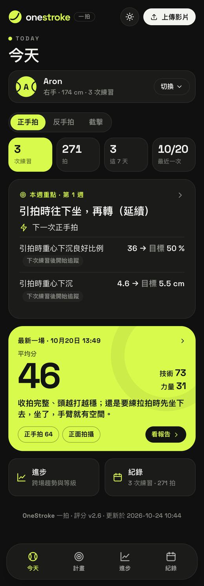
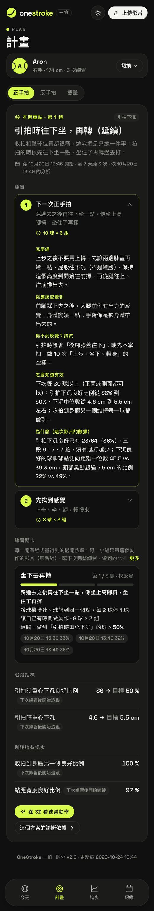
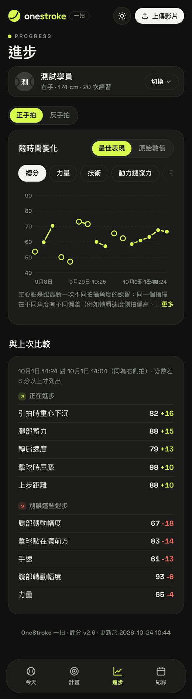
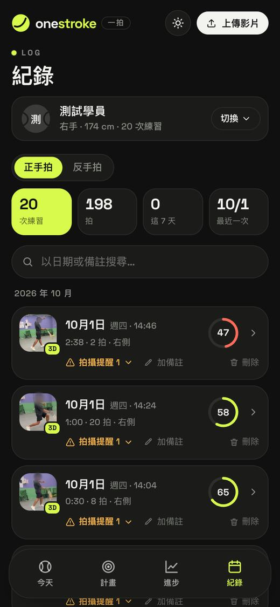
先講一個最主要的問題和證據拍，再給完整數據，最後是每一拍的切片。三頁都是整頁長圖，可以在手機框裡往下捲。
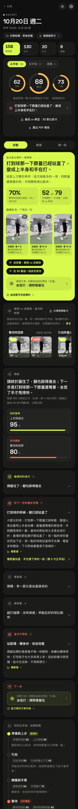
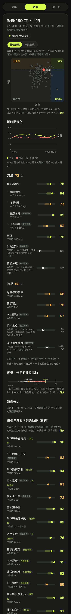
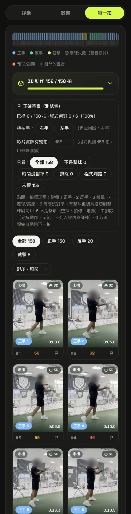
每一拍都能用 3D 從任何角度看；一鍵產生直式分享影片：子彈時間、揮拍光軌、最佳拍 vs 典型拍並排繞一圈。
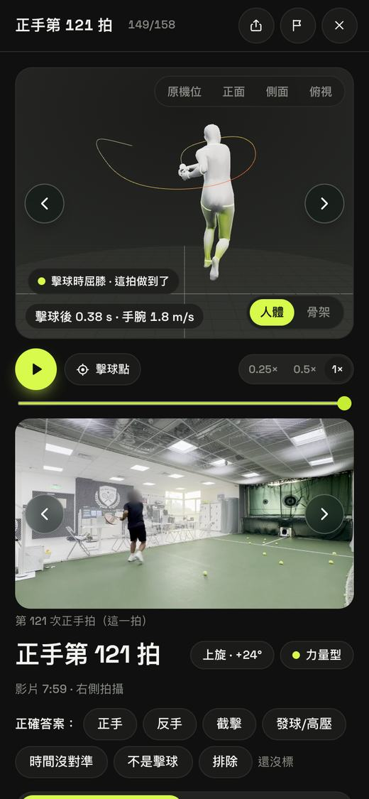
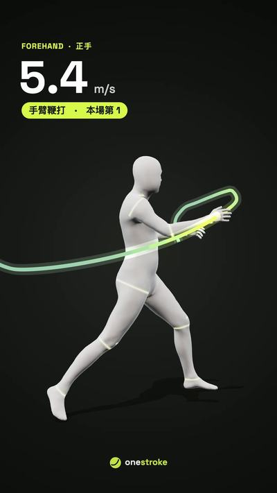
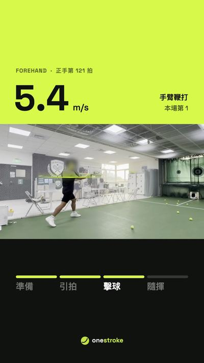
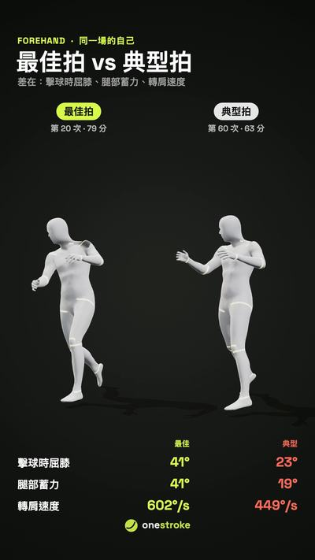
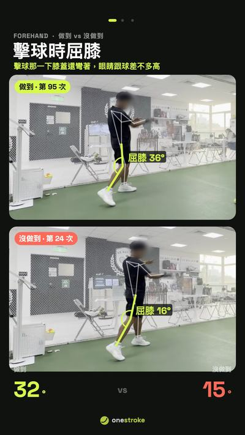
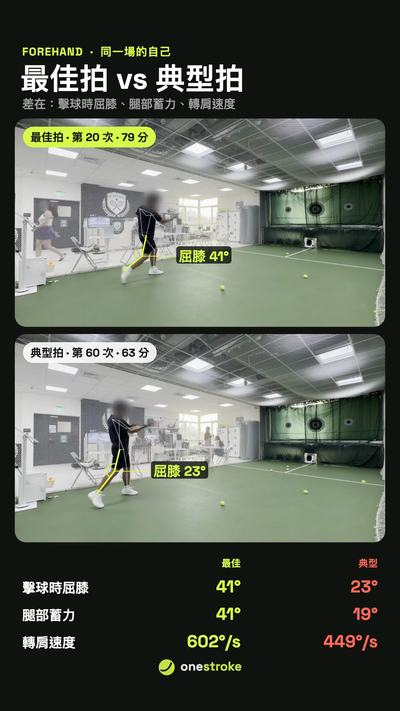
同一場、同一個角度的自己，停在關鍵的那一瞬間；左邊做到、右邊沒做到，骨架上直接標出角度與位移。
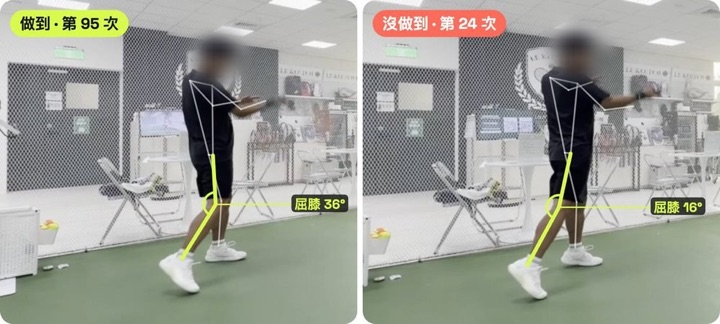
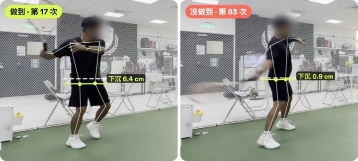
教練登入後先看到自己的學員；上傳是分段續傳，斷線也能接著傳。
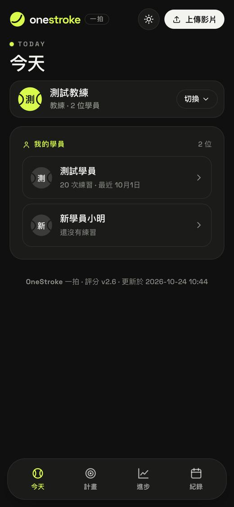
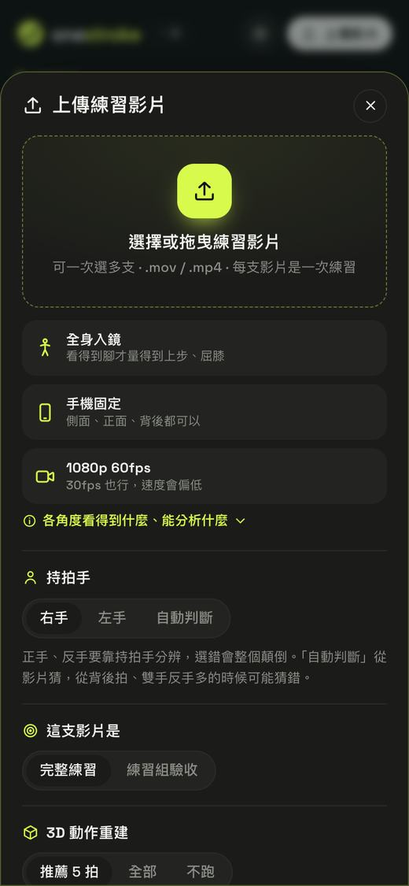
深色正式版，報告頁一鍵匯出：封面、摘要、分析、指標與動作檢查點、做到 vs 沒做到、最佳拍 vs 典型拍、練習方案；每頁有頁碼。
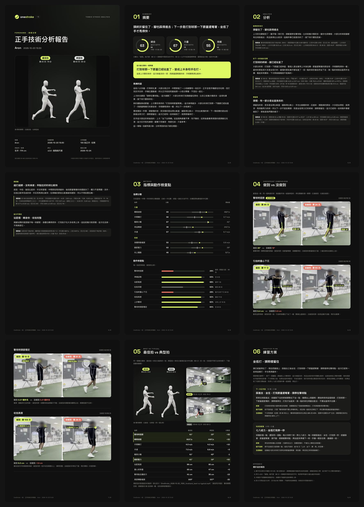
程式由 AI 編碼代理實作，我負責「做對的東西」：定義問題、訂驗收標準、在選項之間做決定，並且審查每一個結果。讓這件事在 5 天內可行的，是幾條工作規則：
一拍 · 手機拍一段，看懂每一拍
Aron · 產品經理。本頁的產品畫面、數字與日期皆來自這個專案的實際資料與開發紀錄。